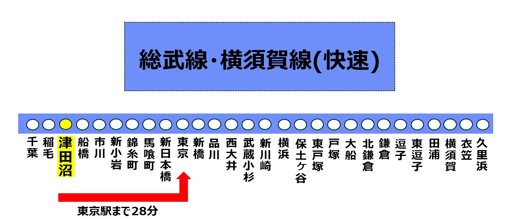
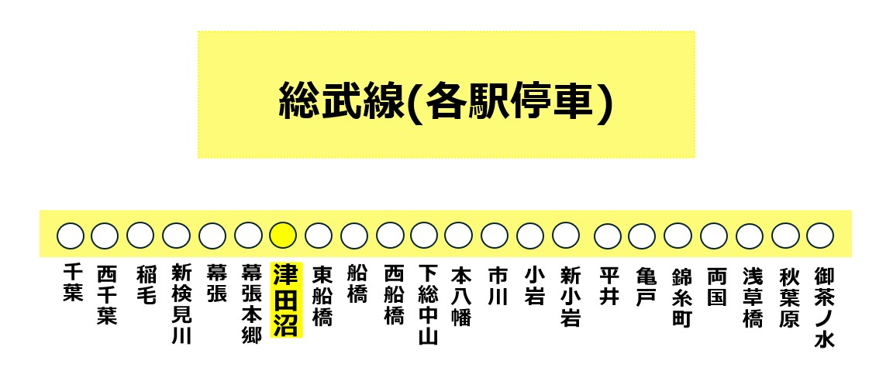
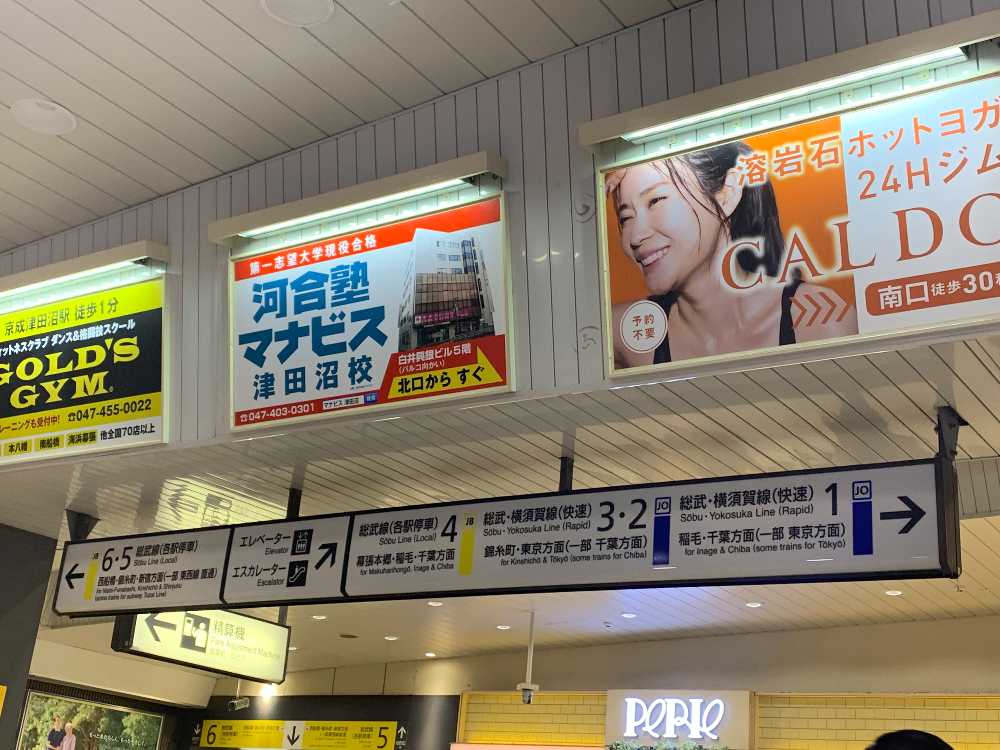

1. 総武・横須賀線（快速）
- 東京や品川方面へのアクセスが便利で、津田沼駅から東京駅まで約28分で到着します。
- 始発電車も運行しており、朝の通勤にも便利です。
- 多くの社会人や学生にとって、住みやすい街として人気があります。
路線図

2. 中央・総武線（各駅停車）
- 各駅停車のため、途中駅での乗降が可能です。
- 千葉方面に向かう便も充実しており、広範囲にわたる移動が便利です。
- 全車両が通勤や通学に便利な設備を備えており、快適な乗車が可能です。
路線図

駅内・周辺の施設・アクセス

- 津田沼駅内には、様々な施設も設置されています。3COINSやビアードパパは、
- 駅近くの「津田沼パルコ」や「イオンモール津田沼」などでショッピングを楽しむことができます。
- また、駅周辺には病院、学校、銀行などの施設も充実しています。